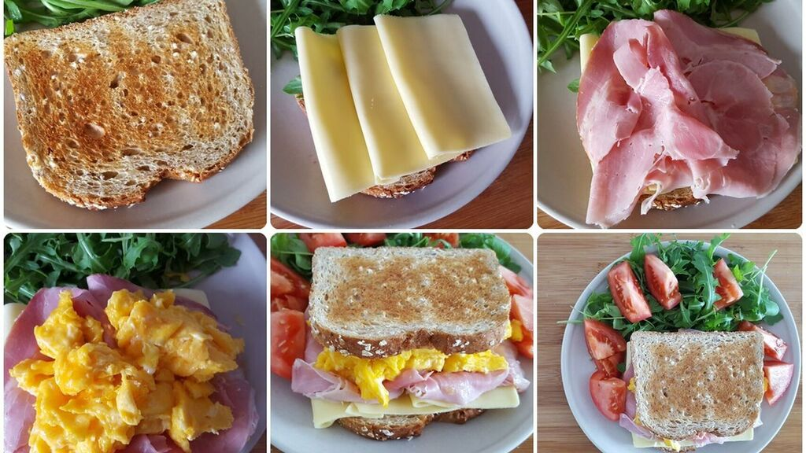

Les ingrédients :
- 2 fines tranches de pain complet.
- 40g de mozzarella.
- 1 tomate bien ferme.
- 1 branche de basilic.
- Sel.
- Poivre du moulin.
- 1 cuillère à soupe de beurre mou.
- 1 prtite pomme.
- 1 kiwi.
- 5 cuillère à soupe de fromage blanc.
- 1 orange
- 1 abricot sec.
- Quelques feuilles de laitue.
Sandwich
Pour réaliser un Sandwich tomate-mozzarella, il faut réunir les ingrédients suivants : - 6 olives noires dénoyautées. - 1 cuillère à soupe de fromage blanc.
u
- 2 fines tranches de pain complet.
- 40g de mozzarella.
- 1 tomate bien ferme.
- 1 branche de basilic.
- Sel.
- Poivre du moulin.
Pour réaliser le Sandwich au fromage blanc et aux fruits pour deux personnes, il faut réunir les ingrédients suivants : - 2 petits pains longs.
- 1 cuillère à soupe de beurre mou.
- 1 petite pomme.
- 1 kiwi.
- 5 cuillères à soupe de fromage blanc.
- 1 orange.
- 1 abricot sec.
- Quelques feuilles de laitue.

Les recettes pas à pas
Il existe des sandwichs chauds, des sandwiches froids, des hamburgers, des sandwichs club...
Pour réaliser un sandwich tomate-mozzarella, c'est très simple : - Concasser finement les olives noires avec un couteau.
- Les mélanger avec le fromage blanc.
- Avec ce mélange, tartiner les tranches de pain complet.
- Égoutter la mozzarella et la couper en fines rondelles.
- Laver et équeuter la tomate. La couper en rondelles.
- Laver et égoutter le basilic, en détacher les feuilles.
- Sur une des tranches de pain, alterner les rondelles de tomates, les rondelles de mozzarella et les feuilles de basilic.
- Saupoudrer d'un peu de sel et de poivre du moulin.
- Recouvrir le tout avec la deuxième tranche de pain.
Il ne reste plus qu'à se régaler.
Pou une autre idée de sandwich frcuillèreoid, frais et facile à réaliser, voici la recette du sandwich au fromage blanc et aux fruits :
- Couper l'abricot en petits cubes.
- Râper 1 à café de zeste d'orange et peler le reste du fruit.
- Couper l'orange en quartiers et en retirer la peau.
- Mélanger le beurre avec le zeste et l'abricot.
- Couper les petits pains en deux, tartiner les moitiés supérieures avec le mélange précédent.
- Laver et égoutter les feuilles de salade puis les poser sur les autres moitiés de pain.
- Laver la pomme, enlever le cœur et les pépins puis la couper en petits morceaux sans enlever la peau.
- Peler le kiwi et le couper en dés.
- Mélanger le tout avec le fromage blanc.
- Répartir sur la salade.
- Décorer avec les quartiers d'orange, recouvrir avec la partie de pain beurré.
Déguster.